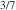
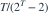
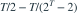

独立且为参数λ的零截断泊松分布，
独立且为参数λ的零截断泊松分布， 为完全充分统计量。已知
为完全充分统计量。已知  对λ无偏。观察到T=4时，λ的UMVUE等于？
对λ无偏。观察到T=4时，λ的UMVUE等于？- A

- B
- C
- D

我已思考，展开答案与解析
正确答案：C
- 。对T条件化得到 。
- 该条件概率为

，所以估计量为
。 - T=4时 。
易错提醒零截断样本的均值大于λ，样本均值本身不是λ的无偏估计。
考后回忆 · 条件重建 · 回忆5的参数估计重建
依据考试回忆重建；数字、选项和必要条件为补充设定，非原题。
独立且为参数λ的零截断泊松分布， 为完全充分统计量。已知 对λ无偏。观察到T=4时，λ的UMVUE等于？

，所以估计量为
。考后回忆 · 条件重建 · 回忆5的参数估计重建
依据考试回忆重建；数字、选项和必要条件为补充设定，非原题。